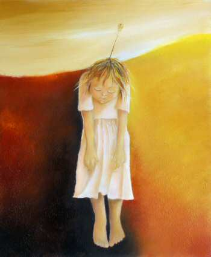

The Wounded Child
(30 x 36)
Memories of childhood abuse, neglect and other traumas are stored in the psyche of the Wounded Child. The dark side suggests that you credit your painful childhood and blame your parents or caregivers for your current dysfunctional relationships - the light side offers hope and healing. Painful experiences of the Wounded Child often awakens a deep sense of empathy to heal others.
This painting is available in alternative giclee print sizes.
Size A: 8 x 10
Size B: 11 x 14